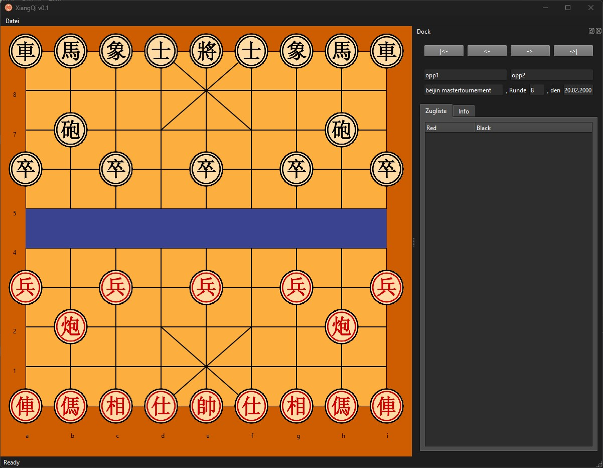

Mit unserer Software kann man das chinesische Schachspiel XiangQi, auch bekannt als Elephanten Schach, spielen.
Das Spiel ist noch in der Entwicklung, aber Sie können es bereits herunterladen und ausprobieren.
Die aktuelle Version ist 0.3. Sie finden es unter Download.
Das chinesische Schach, auch bekannt als "Xiangqi" oder "Chinesisches Schach", ist ein traditionelles Strategiespiel,
das seinen Ursprung in China hat. Es wird oft als das älteste lebende Schachspiel der Welt angesehen
und hat eine lange Geschichte, die sich über mehrere Jahrhunderte erstreckt. Die genaue Entstehung des
chinesischen Schachs ist jedoch nicht genau datiert und bleibt größtenteils in der historischen Dunkelheit verborgen.
Die Ursprünge des chinesischen Schachs reichen mindestens bis zur Zeit der Tang-Dynastie (618-907 n. Chr.) zurück.
Die älteste erhaltene Erwähnung des Spiels findet sich in einem Text aus dieser Ära. Die Regeln und das
Spielbrett wurden im Laufe der Zeit verfeinert und entwickelten sich weiter, wobei verschiedene Varianten entstanden.
Das chinesische Schach wird auf einem quadratischen Brett mit neun horizontalen Linien und neun vertikalen Spalten
gespielt. Jede Seite hat sieben verschiedene Arten von Spielsteinen, die verschiedene militärische Einheiten repräsentieren,
darunter General, Minister, Elefant, Pferd, Wagen, Kanone und Soldaten. Jeder Stein hat spezifische Bewegungsregeln,
die seine Rolle im Spiel bestimmen.
Während das chinesische Schach auf den ersten Blick Ähnlichkeiten mit dem internationalen Schach aufweist,
gibt es wichtige Unterschiede in den Regeln und im Spielaufbau. Zum Beispiel hat das chinesische Schach eine
Flusslinie in der Mitte des Bretts, die bestimmte Spielsteine daran hindert, diese Linie zu überqueren. Darüber
hinaus gibt es Einschränkungen bei der Bewegung einiger Spielsteine und spezielle Regelungen wie die Möglichkeit,
den gegnerischen General direkt anzugreifen.
Im Laufe der Jahrhunderte hat das chinesische Schach eine bedeutende Rolle in der chinesischen Kultur gespielt.
Es wurde nicht nur als Unterhaltungsspiel angesehen, sondern auch als Mittel zur Förderung strategischen Denkens
und zur Entwicklung von militärischen Taktiken. Es diente auch als Symbol für die Kampfkunst und strategische Intelligenz.
Heutzutage bleibt das chinesische Schach ein beliebtes Spiel in China und anderen Teilen Ostasiens. Es wird auf
vielen Ebenen gespielt, von einfachen Partien in Familien bis hin zu hochkompetitiven Turnieren auf professionellem
Niveau. Das Spiel hat auch den Weg ins digitale Zeitalter gefunden und kann online gespielt werden.
Insgesamt zeigt die Geschichte des chinesischen Schachs, wie ein altes Spiel über die Jahrhunderte hinweg überlebt
hat und einen bedeutenden Platz in der Kultur und dem täglichen Leben seiner Spieler gefunden hat.
Auf einem quadratischen Brett mit neun horizontalen Linien und neun vertikalen Spalten spielen zwei Spieler gegeneinander.
Das Ziel ist es, den gegnerischen General anzugreifen und in eine Position zu bringen, in der er nicht entkommen kann.
Jeder Spieler kontrolliert sieben Arten von Spielsteinen, darunter General, Minister, Elefant, Pferd, Wagen, Kanone und Soldaten.
Die Bewegung der Spielsteine ist spezifisch, zum Beispiel bewegt sich der General nur innerhalb eines bestimmten Bereichs.
Die Flusslinie in der Mitte des Bretts begrenzt einige Spielsteine und hat strategische Auswirkungen auf das Spielgeschehen.
Ein besonderes Element ist die "Cannon", die über andere Steine springen kann, aber ein weiterer Stein muss dazwischen stehen.
Der gegnerische General kann direkt angegriffen werden, aber er kann auch durch geschickte Bewegungen geschützt werden.
Ein interessantes Konzept ist die Fähigkeit, den gegnerischen General einzusperren, sodass er keine legalen Züge mehr hat.
Das chinesische Schach fördert strategisches Denken, taktische Planung und erfordert eine kluge Positionierung der Spielsteine.
Verschiedene Varianten und Strategien machen das Spiel zu einer fesselnden Herausforderung für Spieler aller Altersgruppen.
Die Spielsteine im chinesischen Schach haben vielfältige Zugmöglichkeiten.
Der "General" bewegt sich diagonal in seinem Palast, darf aber nicht den Palast verlassen.
Der "Minister" bewegt sich diagonal, aber nur in seinem eigenen Palast.
Der "Elefant" bewegt sich diagonal über zwei Felder und kann nicht über den Fluss springen.
Das "Pferd" bewegt sich in einem L-Muster, kann von einem Stein im vorderen Eckpunkt blockiert werden.
Der "Wagen" bewegt sich horizontal oder vertikal über beliebig viele freie Felder.
Die "Kanone" bewegt sich wie ein Wagen, muss aber einen Stein springen, um einen anderen zu schlagen.
Die "Soldaten" bewegen sich ein Feld nach vorne, nach dem Fluss diagonal und können rückwärts schlagen.
Die Flusslinie beeinflusst die Bewegungen von "Elefant", "Pferd" und "Soldat".
Die verschiedenen Bewegungsmuster erfordern kluges Positionieren und taktisches Vorausdenken.
Das chinesische Schachbrett ist quadratisch mit neun horizontalen und neun vertikalen Linien.
Es gibt zwei Paläste, einen für jeden General, in der Mitte des Bretts.
Die Flusslinie teilt das Brett in zwei Hälften und beeinflusst bestimmte Spielsteine.
Die Positionierung der Steine am Anfang beeinflusst den Verlauf des Spiels.
Die Symmetrie des Bretts sorgt für ein ausgewogenes strategisches Umfeld.
Die ursprüngliche Struktur des Bretts hat im Laufe der Zeit Bestand gehabt.
Die Kombination aus Linien und Palästen schafft taktische Herausforderungen für Spieler.
Das Spielbrett bildet die Bühne für komplexe strategische Manöver und Züge.
Die Brettstruktur verleiht dem chinesischen Schach seinen charakteristischen Charme und Anspruch.
Wenn Sie Fragen oder Anregungen haben, können Sie uns gerne eine Nachricht schreiben.
Wir werden uns so schnell wie möglich bei Ihnen melden.
Vielen Dank!
Ihr Boring Games-Team
{kind=link}